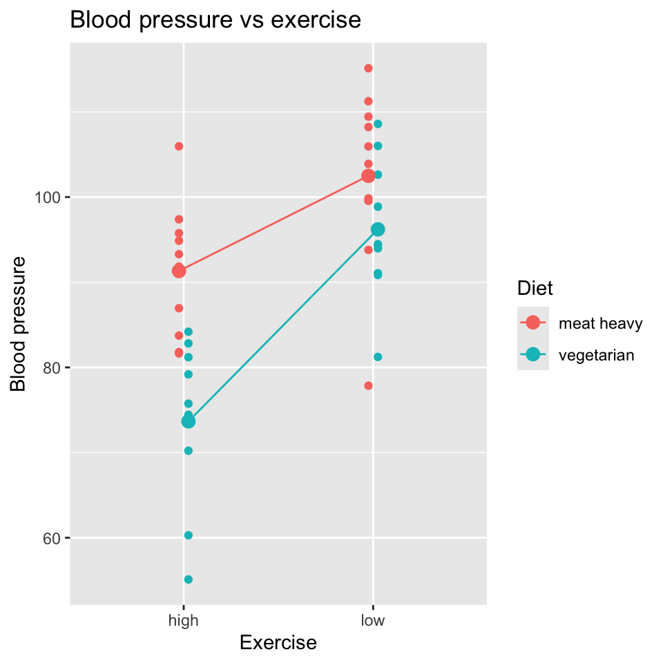

bp mins_per_week diet
1 94.12854 53.10173 meat heavy
2 90.99957 74.42478 meat heavy
3 73.83541 114.57067 meat heavy
4 77.05434 181.64156 meat heavy
5 100.14578 40.33639 meat heavy
6 95.61900 179.67794 meat heavyInteractions (L5)
This chapter contains the content of the fifth lecture of the course BIO144 Data Analysis in Biology at the University of Zurich.
Introduction
Interactions are some of the most interesting phenomena in science, including biology. We are not talking about interactions between species, like predation, though these are also very interesting. We are talking about effects of one thing, like diet, depending on another thing, like exercise. Lets break that down a bit…
Imagine we make a study of the effect of exercise (minutes per week) on blood pressure for people with a meat heavy diet. We might find the following:
We see that exercise seems to lower blood pressure. But what if we look at the effect of exercise on blood pressure for people with a vegetarian diet?
bp mins_per_week diet
1 77.56704 122.92899 vegetarian
2 84.30684 111.43191 vegetarian
3 75.23323 65.75546 vegetarian
4 85.67402 90.62629 vegetarian
5 77.45327 100.08819 vegetarian
6 102.31114 36.17327 vegetarianWe see that exercise seems to lower blood pressure for vegetarians too, but the effect seems to be weaker.
To summarise this finding, we can say that the effect of exercise on blood pressure is stronger for people with a meat heavy diet than for people with a vegetarian diet. This means that the effect of exercise on blood pressure depends on diet.
This is very clear when we look at the both diets in the same graph:

Think, Pair, Share (#general-diet)
Can we say anything general about the effect of diet on blood pressure?
No, we can’t. We cannot, for example, state that a vegetarian diet lowers blood pressure. We can say, however, that a vegatarian diet lowers blood pressure of people that do little exercise.
Think, Pair, Share (#general-exercise)
Can we say anything general about the effect of exercise on blood pressure?
Well, we can say that exercise lowers blood pressure, but we have to be careful. We have to say that exercise lowers blood pressure of people with a vegetarian diet more than of people with a meat heavy diet.
I think it is clear that the interaction was easier to see when we plotted all the data in one graph… it is much easier to visually compare the slopes of the two regression lines when they are on the same graph.
As we will see later in this chapter, the same holds true for statistical tests of interactions: it is much easier to make a statistical test of the interaction when we have all the data in one data frame. It is harder and is not recommended to make a separate regression for each level of the second variable (diet) and then compare the slopes of the regression lines (it is possible, just not at all efficient).
Parallel and non-parallel effects
In the example above, the effect of exercise on blood pressure was stronger for people with a meat heavy diet than for people with a vegetarian diet. That is, the slope of the regression line was steeper for the meat heavy diet than for the vegetarian diet. Put another way, the regression lines are not parallel.
Parallel regression lines are evidence of no interaction. This means that the effect of one variable (exercise) is the same for all levels of another variable (diet).
When the regression lines are not parallel, there is evidence of an interaction. This means that the effect of one variable (exercise) depends on the level of another variable (diet).
Another example of an interaction
Two categorical variables: diet and exercise
# A tibble: 6 × 5
diet exercise reps bp error
<chr> <fct> <int> <dbl> <dbl>
1 meat heavy high 1 83.7 -6.26
2 meat heavy low 1 115. 15.1
3 vegetarian high 1 84.2 9.19
4 vegetarian low 1 109. 13.6
5 meat heavy high 2 91.8 1.84
6 meat heavy low 2 104. 3.90
And another example of an interaction
Two continuous explanatory variables (age and exercise minutes) and one continuous response variable (blood pressure)
bp age mins_per_week
1 61.58319 35.93052 130.94479
2 83.86716 42.32743 70.63945
3 93.01438 54.37120 54.05203
4 82.14413 74.49247 198.53681
5 60.13102 32.10092 126.69865
6 102.00306 73.90338 42.64163


Interactions and additivity of effects
Another way of thinking about this is that the effects of diet and exercise on blood pressure are not additive. If in one study we estimated the effect of diet on blood pressure we might find an effect size of 10. If in another study we estimated the effect of exercise on blood pressure we might find an effect size of 5.
Think, Pair, Share (#adding-effects)
If the effects of diet and exercise were additive, what would we expect the effect size to be if we estimated the effect of diet and exercise on blood pressure in the same study?
If the effects are non-additive, we would expect the effect size to be different from additive. For example, if we found the combined effect of diet and exercise on blood pressure to be 30, we would say that the effects are non-additive. Their combined effect is more than the sum of their individual effects. This example is of a synergistic interaction because the combined effect (30) is greater than the sum of the individual effects (15).
Drug interactions
When we are prescribed a medication, we are often asked if we are taking any other medications. This is because the effects of drugs can interact. For example, if we take two drugs that both lower blood pressure and they interfere with each other, the combined effect might be less than the sum of their individual effects. This is an antagonistic interaction. It could be worse than that though, the interaction might actually be harmful, which is why doctors are so careful about known and potential drug interactions.
The maths bit
Let us return to the example of the effects of number of minutes of exercise and diet on blood pressure:
We have one continuous explanatory variable (minutes of exercise) and one binary explanatory variable (diet) and one continuous response variable (blood pressure).
Think, Pair, Share (#without-interaction)
What would a linear model without an interaction term be?
\[y_i = \beta_0 + \beta_1 x_{i}^{(1)} + \beta_2 x_{i}^{(2)} + \epsilon_i\]
where:
- \(y_i\) is the blood pressure of the \(i\)th participant
- $x_1^{(i)} is the number of minutes of exercise of the \(i\)th participant
- \(x_2^{(i)}\) is the diet of the \(i\)th participant
- \(\beta_0\) is the intercept
- \(\beta_1\) is the effect of exercise on blood pressure
- \(\beta_2\) is the effect of diet on blood pressure
- \(\epsilon_i\) is the error term for the \(i\)th participant.
This model is a multiple regression model in which one of the explanatory variables is binary.
Think, Pair, Share (#with-interaction)
What might the model look like if we wanted to include an interaction between diet and exercise?
\[y_i = \beta_0 + \beta_1 x_{i}^{(1)} + \beta_2 x_{i}^{(2)} + \beta_3 (x_{i}^{(1)} x_{i}^{(2)}) + \epsilon_i\]
where:
- \(x_{i}^{(1)}x_{i}^{(2)}\) is the product of the number of minutes of exercise and the diet of the \(i\)th participant.
- \(\beta_3\) is the coefficient of the interaction term between diet and exercise.
We could also write this model as:
\[y_i = \beta_0 + \beta_1 x_{i}^{(1)} + \beta_2 x_{i}^{(2)} + \beta_3 x_{i}^{(3)} + \epsilon_i\]
where:
- \(x_{i}^{(3)} = x_{i}^{(1)} x_{i}^{(2)}\)
This is again a multiple regression model, but now with three explanatory variables.
Think, Pair, Share (#sketch-interaction)
Make sketches of the possible relationships between diet, exercise and blood pressure. Make a sketch compatible with \(\beta_3 = 0\). Make a sketch compatible with \(\beta_3 \neq 0\).
Hypothesis testing
If we want to test whether the effect of minutes of exercise on blood pressure is different for people with different diets, we need a null hypothesis to test.
Think, Pair, Share (#interaction-null)
What is the null hypothesis in this case, verbally, and in terms of the coefficients of the model?
The null hypothesis is that the effect of minutes of exercise on blood pressure is the same for people with different diets. This is a null hypothesis of no interaction between diet and exercise. In terms of the coefficients of the model, the null hypothesis is that \(\beta_3 = 0\).
If we reject the null hypothesis, we conclude that the effect of minutes of exercise on blood pressure is different for people with different diets. This is a non-additive effect.
Doing it in R
Let us fit the model with the interaction term in R. There are two methods to do this and they are equivalent:
mod1 <- lm(bp ~ mins_per_week + diet + mins_per_week:diet, data=bp_diet)
mod2 <- lm(bp ~ mins_per_week * diet, data=bp_diet)The second is a shorthand for the first. The * operator includes the main effects (main effects are terms in the model that don’t include interactions) and the interaction term. The : operator includes only the interaction term.
Of course, we check the model diagnostics before we interpret the results:
All of the plots look good.
Now, let us look at the coefficients of the model:
Estimate Std. Error t value Pr(>|t|)
(Intercept) 100.62716134 2.87228930 35.033783 1.714199e-56
mins_per_week -0.09661054 0.02406014 -4.015376 1.177969e-04
dietvegetarian -15.27591304 4.09882726 -3.726898 3.275630e-04
mins_per_week:dietvegetarian 0.06907583 0.03433487 2.011828 4.704076e-02As expected, there are four coefficients.
The first is (Intercept), which is the expected blood pressure for a person who does 0 minutes of exercise and is on diet “meat heavy”.
The second is mins_per_week, which is the effect (slope) of minutes of exercise on blood pressure for a person on diet “meat heavy”.
The third is dietvegetarian, which is the effect of being on a vegetarian diet on blood pressure for a person who does 0 minutes of exercise. This can be thought of as the change in the intercept for a person on a vegetarian diet compared to a person on a “meat heavy” diet.
The fourth is the interaction term mins_per_week:dietvegetarian, which is the difference in the effect (slope) of minutes of exercise on blood pressure for a person on a vegetarian diet compared to a person on a “meat heavy” diet.
Think, Pair, Share (#two-equations)
Write two equations, one for each of the two diets. They would look something like this: \(y_i = 0.1 - 0.1 x_{i}^{(1)}\), but will have other numbers.
Reporting our findings
Of course a nice graph is always helpful. We already have quite a nice one:

We also might want some tables summarizing the model results. Here is a table of the coefficients:
| Estimate | Std. Error | t value | Pr(>|t|) | |
|---|---|---|---|---|
| (Intercept) | 100.6271613 | 2.8722893 | 35.033783 | 0.0000000 |
| mins_per_week | -0.0966105 | 0.0240601 | -4.015377 | 0.0001178 |
| dietvegetarian | -15.2759130 | 4.0988273 | -3.726898 | 0.0003276 |
| mins_per_week:dietvegetarian | 0.0690758 | 0.0343349 | 2.011828 | 0.0470408 |
We could also report the \(R^2\) of the model:
[1] 0.2732093And also a table of the variances of the terms in the model:
| Df | Sum Sq | Mean Sq | F value | Pr(>F) | |
|---|---|---|---|---|---|
| mins_per_week | 1 | 1133.554 | 1133.55446 | 13.47998 | 0.0003964 |
| diet | 1 | 1560.753 | 1560.75255 | 18.56012 | 0.0000398 |
| mins_per_week:diet | 1 | 340.357 | 340.35702 | 4.04745 | 0.0470408 |
| Residuals | 96 | 8072.804 | 84.09171 | NA | NA |
We also might use a sentence like this to report the results: “The effect of minutes of exercise is generally negative, but the effect is stronger for people on a meat heavy diet than for people on a vegetarian diet (\(t\)-statistics of interaction term = 2.01, degree of freedom = 2, p = 0.05). The greater beneficial effect of exercise on blood pressure for people on a meat heavy diet is largely caused by the high blood pressure of people on a meat heavy diet that do not exercise.”
Multiple regression vs. many single regressions
Question: Why not just fit a separate simple regression model and then compare the two separately estimated slopes? That is, why not fit the two models:
\[y_i = \beta_{0,veg} + \beta_{1,veg} x_i^{(1)} + \epsilon_i\]
\[y_i = \beta_{0,meat} + \beta_{1,meat} x_i^{(2)} + \epsilon_i\]
and compare the estimate of \(\beta_{1,veg}\) to the estimate of \(\beta_{1,meat}\)?
Well, you could do that, and could probably find a way to test for whether the difference in the slopes is different from 0. This would be a test of the null hypothesis that the effect of minutes of exercise on blood pressure is the same for people with different diets. But, this would be a more complicated way to do it, and would not be as general as the model with the interaction term. The model with the interaction term is more general, more flexible, and more elegant.
Recap
- Binary and categorical explanatory variables.
- Interactions: a categorical explanatory variables allows for group-specific intercepts and slopes.
- The \(F\)-test is used to test if \(\beta_1=\beta_2=...=\beta_k=0\) at the same time for a categorical explanatory variable with \(k\) levels. Use the
anovafunction in R to carry out this test. - The \(F\)-test is a generalization of the \(t\)-test, because the latter is used to test \(\beta_j = 0\) for one single variable \(x^{(j)}\).
- Test for a single \(\beta_j=0\) \(\rightarrow\) \(t\)-test.
- Test for several \(\beta_2 = ... = \beta_{k}=0\) simultaneously \(\rightarrow\) \(F\)-test.
Thus you will always need the \(F\)-test anova() to obtain a \(p\)-value for a categorial explanatory variable with more than 2 levels. This is because such a variable is represented by more than one coefficient in the model (remember the dummy variables).